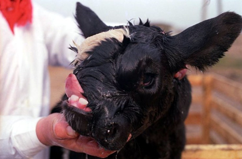

This radioactivity was spread by the wind over Belarus, Russia, and Ukraine.
It soon reached as far west as France and Italy. Many people remained in contaminated areas, and
many livestock were born deformed. The Chernobyl disaster sparked criticism of unsafe procedures
and design flaws in Soviet reactors. It also heightened resistance to the building of more such plants. They soon, one by one, shut down the reactors and the plant.
exaple of exposure to radiation next